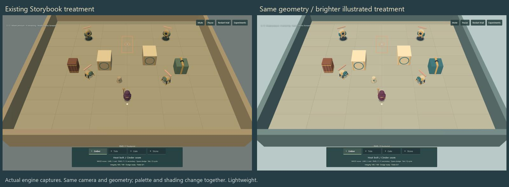

Historical evidence — not current gameplay
Two useful comparisons.
These two actual-engine contact sheets explain how the illustrated direction developed. They predate the wall-flicker fix. They are preserved for comparison, not presented as today's visual quality.

Shared geometry exposed the earlier comparison's confounding changes in form and shading. The small painted benchmark established the current material and character direction.
The small painted benchmark established the current material and character direction.Older clips and repeated screenshots remain in Git history. Measurements, decisions, bug evidence and all playable historical scenes remain in the current repository.